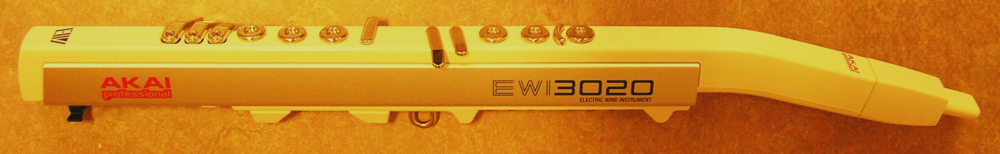

Akai EWI 1000
The saxophone with no moving keys — just the electricity in your fingers

Overview
The Akai EWI 1000 is the first commercially released electronic wind instrument controller, introduced in 1987. Invented by Nyle Steiner of Utah, the EWI (Electronic Wind Instrument) looks something like a soprano saxophone or clarinet — straight, held in front of the body with a neck strap, with a silicone mouthpiece at the top. But instead of mechanical keys, the EWI uses body-capacitance touch sensing on every playing surface. A finger touching a key changes a local capacitance field detected by an oscillator circuit, requiring zero physical travel. The mouthpiece contains a breath pressure sensor (controlling dynamics via MIDI Breath Control) and a bite pressure sensor (controlling vibrato or other modulation parameters). The left thumb selects octave by rolling between four rollers; the right thumb controls pitch bend via two touch plates. The EWI was sold as a two-part system: the handheld controller and a rackmount digitally-controlled analog synthesizer unit. It outputs MIDI, allowing it to control any external synthesizer.
### Deep Dive
Nyle Steiner and the genesis of capacitive wind control. Nyle Steiner was a self-taught engineer and trumpet player from Utah who began experimenting with electronic wind instruments in the 1970s. His first design was the EVI (Electronic Valve Instrument), a brass-style fingering controller that used touch-sensitive metal pads instead of mechanical valves. After bringing the EVI to market through his company Steiner-Parker, he developed the EWI — a woodwind-style fingering system with a radically different design philosophy. Instead of closing or opening physical holes (as an acoustic instrument would), each EWI key acts as a pitch modifier that can change note values by plus or minus a half step or whole step. This means fingerings that are impossible on acoustic instruments become possible on the EWI.
Capacitive touch in 1987. The EWI's capacitive sensing uses body capacitance — the natural electrical charge of a human finger — to detect contact. The keys are stationary metal plates connected to oscillator circuits. When a finger approaches or touches a key, it alters the local capacitance, changing the oscillator's frequency or amplitude. Because the keys don't move, there is no mechanical travel time, no key noise, no bounce, and no physical wear. This allows faster note onsets than any mechanical switch could achieve. The technology predates capacitive touchscreens in consumer electronics by approximately 20 years. The EWI also allowed "partial touch" — fingers hovering or lightly grazing a key could produce different results than firm contact — a dimension of expression absent from mechanical keyboards and buttons.
Three simultaneous continuous channels. The EWI's interaction model combines three independent real-time continuous input channels: breath pressure (controlling volume and dynamics), bite pressure (controlling vibrato or pitch modulation), and capacitive finger position (controlling note pitch and articulation). A saxophone player produces sound through embouchure, breath control, and fingering — the EWI maps each analog dimension to an electronic sensor and transmits the combined signal as MIDI data. The left thumb rolls between octave rollers to shift range, an action analogous to a saxophone's octave key but implemented as a continuous rolling motion. The right thumb operates two pitch-bend plates, allowing smooth glides between notes. This created an instrument where a single human gesture — breathing harder while biting the mouthpiece and sliding a finger — could produce a compound musical expression impossible to achieve with separate knobs and sliders.
Commercial life and musical impact. Akai Professional manufactured and distributed the EWI after licensing Steiner's design. The EWI 1000 (1987) was followed by the EWI 3000 and EWI 3020 (mid-1990s), EWI 4000s (2005), EWI 5000 (2014), and EWI SOLO (2020). The instrument found a dedicated following among jazz fusion musicians, particularly in Japan, where T-Square members Takeshi Itoh and Masato Honda used it extensively. Michael Brecker, Bob Mintzer, and other notable saxophonists adopted it. The EWI's unusual fingering system — where the same fingering produces the same note name in every octave — made it easier to learn than acoustic woodwinds, but the lack of mechanical feedback (no keys that "press down") disoriented some traditional players.
Deep dive
Media
Sources
- Electronic Wind Instrument — Wikipedia
- Nyle Steiner Homepage — Patchman Music
- Walters, John. "The Search For Expression: A History of Wind Synthesizers" — Sound on Sound, September 1987
- Walters, John. "Wind Synthesizers" (EWI vs Yamaha WX7 comparison) — Sound on Sound, December 1987
- Pimentel, Bret. "Flexible EWI fingerings"
- Swallow, Matthew J. "MIDI Electronic Wind Instrument: A Study of the Instrument and Selected Works" — DMA dissertation, West Virginia University, 2016